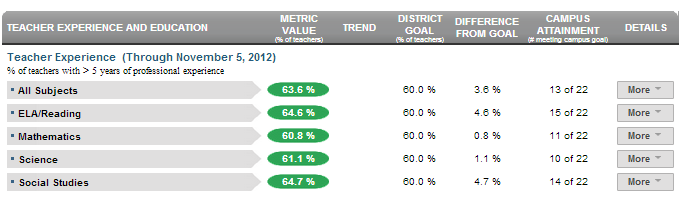

Dashboard Metrics


Teacher Experience
Background
District Dashboard Metrics
Teachers play a huge role in the success of students. Districts and campuses must ensure that all campuses, including those that may be low-performing/high-need, have seasoned teachers. Additionally, in focus group discussions conducted with educators, the Teacher Experience metric was considered useful by 92% of respondents.
Primary Metric
- Teacher Experience: percentage of teachers with more than five years of professional teaching experience.
Related Metrics
- Teacher Certification by Subject Area: percentage of teachers certified to teach the subject and/or grade level they are teaching at each of the four core subject areas, as well as bilingual, ESL, and special education.
- Teacher Education: percentage of teachers holding master's or doctorate degree.
User Interface
Dashboard Example
Figure 1 shows the Teacher Experience metric as seen on the district dashboard.

Figure 1 Ed-Fi Teacher Experience
Status Definition
The Status indicator is determined by district goals. The Ed-Fi default threshold = 60%.
Metric Indicator | |||
Metric Name | Sub-metric Name | Metric Status Indicator | Campus Attainment |
Teacher Experience | All Subjects | Red (Percentage) = percent of teachers with >5 years experience is less than district goal Green (Percentage) = percent of teachers with >5 years experience is equal to or greater than district goal | The number of campuses meeting their campus goal over the number of campuses with data for the metric |
ELA/Reading | Red (Percentage) = percent of teachers with >5 years experience is less than district goal Green (Percentage) = percent of teachers with >5 years experience is equal to or greater than district goal | The number of campuses meeting their campus goal over the number of campuses with data for the metric | |
Mathematics | Red (Percentage) = percent of teachers with >5 years experience is less than district goal Green (Percentage) = percent of teachers with >5 years experience is equal to or greater than district goal | The number of campuses meeting their campus goal over the number of campuses with data for the metric | |
Science | Red (Percentage) = percent of teachers with >5 years experience is less than district goal Green (Percentage) = percent of teachers with >5 years experience is equal to or greater than district goal | The number of campuses meeting their campus goal over the number of campuses with data for the metric | |
Social Studies | Red (Percentage) = percent of teachers with >5 years experience is less than district goal Green (Percentage) = percent of teachers with >5 years experience is equal to or greater than district goal | The number of campuses meeting their campus goal over the number of campuses with data for the metric | |
Trend Definition
Trend Indicators: Objective is to indicate Teacher Experience | |||
| Up green |
| If the value for the current time frame is more than 5 percentage points higher than the prior time frame, then display a gray arrow trending upward. |
| Unchanged | If the value for the current time frame is less than or equal to 5 percentage points higher or less than or equal to 5 percentage points lower, then display two gray arrows pointing outward indicating no direction. | |
| Down red | If the value for the current time frame is more than 5 percentage points lower than the prior time frame, then display a gray arrow trending downward. | |
The trend does not show for the first occurrence of a time frame since data is not available.
Periodicity
Recommended Load Characteristics | |
Calendar | Throughout the school year |
Frequency of data load | Yearly, Semester (to account for teacher turnover) |
Latency | Year |
Interchange schema | Interchange-StaffAssociation.xsd |
Tooltips
The standard tool tips for the metric definition, column headers, and help functions display for this metric.
 is ‘No change from the prior period'
is ‘No change from the prior period' is ‘Getting worse from the prior period’
is ‘Getting worse from the prior period’ is 'Getting better from the prior period'
is 'Getting better from the prior period'
Business Rules
Business Rules
The Teacher Experience metric displays the percentage of teachers with professional experience more than 5 years. The type of certifications that a teacher has is not considered, only the number of years teaching.
A teacher teaching two core courses with more than five years experience is counted for both subjects.
Computed Values
Table 5 defines how values are calculated for each sub-metric. The result of the calculation displays in the Status column on the district dashboard.
Metric Values | ||
Teacher Experience | All Subjects | Total number of teachers in the district with more than 5 years of teaching experience / Total number of teachers in the district currently teaching a course |
ELA/Reading | Total number of teachers in the district with more than 5 years of teaching experience and currently teaching ELA/Reading / Total number of teachers in the district currently teaching ELA/Reading | |
Mathematics | Total number of teachers in the district with more than 5 years of teaching experience and currently teaching mathematics / Total number of teachers in the district currently teaching mathematics | |
Science | Total number of teachers in the district with more than 5 years of teaching experience and currently teaching science / Total number of teachers in the district currently teaching science | |
Social Studies | Total number of teachers in the district with more than 5 years of teaching experience and currently teaching social studies / Total number of teachers in the district currently teaching social studies | |
Data Anomalies
Date of Refresh
Best practice is for the date of last data refresh to appear next the metric in the following format:
- (Through April 2010)
Implementation Considerations
Teacher Identity
Maintaining a correct and consistent teacher identity is important given that relevant teacher data resides in a number of systems: human resources systems, financial systems, teacher certification systems and class scheduling systems, just to name a few. Most systems use some sort of unique identifier. However, sometimes this identifier is entered incorrectly or sometimes different systems use different identifiers.
The UDM XML supports the interchange of multiple types of identifiers. The TeacherReference is a complex type within the UDM to maintain the referential integrity of the teacher identity (that is, ensuring that the data associated with each teacher is accurately associated with the right teacher). The complex type of the teacher reference assists with implementing the accurate matching algorithm to identify a teacher by utilizing any of the individual attributes (e.g. State Unique Staff ID, Staff ID, Name and Birth Date). For example, if the State Unique Staff ID is unknown, you can find the teachers' identity by their Staff ID, First Name, Last Name and Birth Date.
Teacher Experience
This metric displays the number of teachers at a campus who have more than 5 years of experience teaching. The teacher's years of professional experience may not be in the same subject area that the teacher is currently teaching.
Drill Downs
Drill Down Views
The dashboards include the option to drill down and see more detail that is associated with a metric. Table 6 lists the drill down views that are defined for this metric.
| Campus List | List of campuses and whether or not they are meeting their goal for this metric for the specified period. |